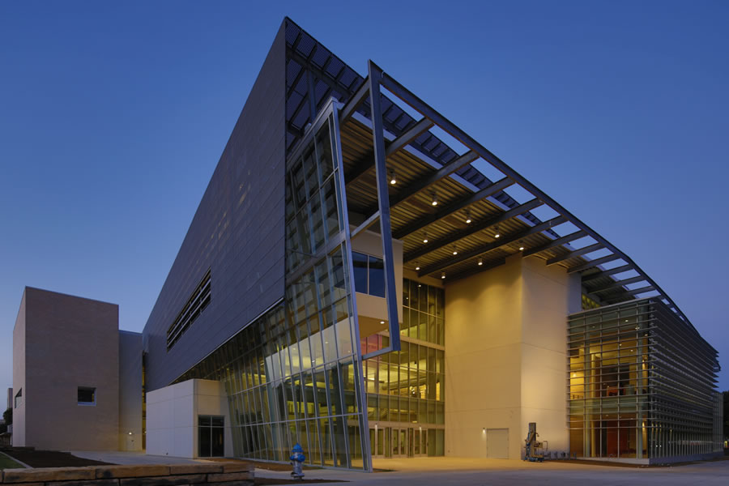

New ATEC Building Sight of Next Nasher XChange Work

The Nasher Sculpture Center has announced their plans for a commissioned work by Liz Larner at UT Dallas for Nasher XChange. read more
UT Dallas Building to be Named for Philanthropist Edith O’Donnell
The Arts and Technology (ATEC) building under construction at The University of Texas at Dallas will bear the name of one of Texas’ most generous philanthropists in honor of her long-standing dedication to higher education, scientific research and the arts. read more
UT Regents Approve Plans to Build ATEC a New Home
The UT System Board of Regents has approved construction of a 155,000-square-foot facility at UT Dallas that will house programs in visual arts, emerging media technology and multimedia communications, as well as a 1,200-seat auditorium. read more